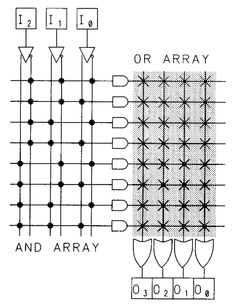
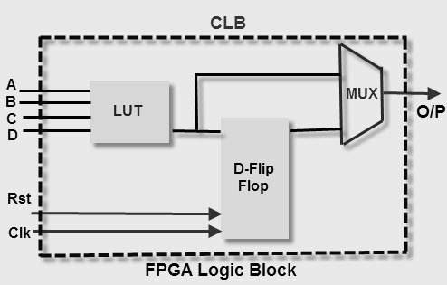
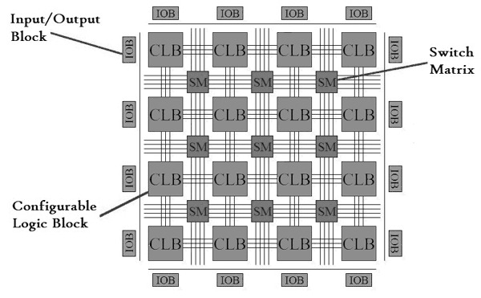

(3) Programmable design style:
These are some of the most popular options among the designer and available in the market which are sold at a large volume at affordable cost. These options are adopted by designers for faster prototyping. Since they are designed for a specific application, sometimes they are also termed as "Programmable ASIC".
There are two basic types of programmable ASICs. One is a Programmable logic device (PLD) and another one is Field programmable gate array (FPGA).
- PLDs use programmable AND, OR gates where one programmable switch is placed. The connection is established by activating these switches. They may be one-time programmable or can be re-programmable in nature. The designer only implements the logic function in a CAD tool and after synthesis, a bit file (binary file) is generated. The software-generated bit file takes care of defining interconnection between different logic gates by activating corresponding MOS switches. They are suitable for small to medium-scale logic design. Due to the use of programmable switches, generally, PLDs are not suitable for high-speed operations. Examples of PLDs: Programmable logic array (PLA), Programmable array logic (PAL), Complex programmable logic devices (CPLD).

- Field Programmable Gate Array (FPGA) is another popular choice for programmable ASIC design. Generally, the logic capacity of FPGA is higher than PLDs and also suitable for applications where a large logic capacity is required. FPGA uses SRAM, multiplexers as core components. The logic is implemented using the lookup table (LUT) approach. The combination of several LUTs, flip flops, and the mux is called a configurable logic block (CLB). Similar to PLDs, programmable interconnects are used to establish interconnections between different CLBs. Input/output buffers are used to connect data with external pins. Design time is faster than PLDs. Hardware description language is used to describe the logic function. After synthesis and successful placement, routing analysis, the bit file is transferred to FPGA and it is configured as the required logic functions. Xilinx, Altera, Actel are the manufacturer of FPGA. Popular FPGA categories are SPARTAN, VIRTEX series from Xilinx, and also others.


*End of Chapter-1. More content will be added in the future.
‹
›